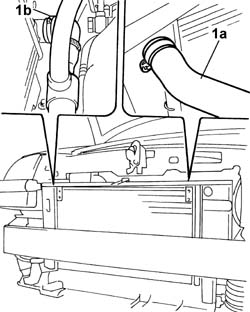
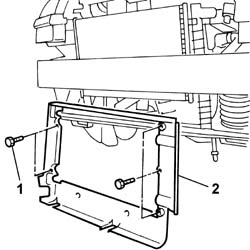
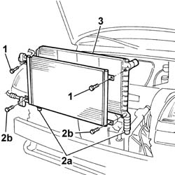

1088B24 engine cooling radiator - r r for air conditioned versions
- Path
- Procedures > 10 ENGINE > 1088 ENGINE COOLING > 1088B ENGINE COOLING RADIATOR - R + R > 1088B24 engine cooling radiator - r r for air conditioned versions
- Kind
- repair procedure (removal / refitting; the operation number is the code)
- Applies to
- engines: 1.2 8v, 1.4 8v, 1.9 DIESEL; all production periods
- Interactive page
- https://sloeber94.github.io/elrnDB-fDbl/en/#/2584300
Applies to: engines: 1.2 8v, 1.4 8v; all production periods
 Removing
Removing
 Refitting
RefittingDisconnect the battery negative terminal.
Op. 7055B54 PROTECTION/GUARD UNDER ENGINE - R.R.
Op. 1088E10 RADIATOR COOLING FAN - R + R
Fit a suitable container for coolant recovery.
1. Disconnect the upper hose (1a) and the lower hose (1b) from the engine cooling radiator.

Applies to: engines: 1.2 8v, 1.4 8v; all production periods
1. Undo the bolts fixing the air duct to the air radiator.
2. Remove the air duct from the lower part of the vehicle.

Applies to: engines: 1.2 8v, 1.4 8v; all production periods
1. Undo the upper bolts fixing the condenser to the engine radiator.
2. Release the radiator-condenser assembly from the retainers (2a) to gain access to the lower fixing bolts (2b), then undo them.
3. Remove the engine cooling radiator.

Applies to: engines: 1.2 8v, 1.4 8v; all production periods
Refitting
RemovingFit the radiator and tighten the lower bolts fixing the condenser to the radiator, then secure the assembly to the retainers on the crossmember underneath.
Tighten the upper bolts fixing the condenser to the radiator.
Position the air duct and tighten the fixing bolts.
Connect the upper and lower radiator pipes and secure them with the retaining band
Op. 1088E10 RADIATOR COOLING FAN - R + R
Op. 0010T20 ENGINE COOLANT - CHANGE
Op. 0010T21 COOLANT - CHECK DENSITY AND TOP UP IF NECESSARY
Op. 7055B54 PROTECTION/GUARD UNDER ENGINE - R.R.
Connect the battery negative terminal.
Applies to: engines: 1.9 DIESEL; all production periods
Removing
RefittingDisconnect the battery negative terminal.
Op. 5040A10 AIR CONDITIONING REFRIGERANT CIRCUIT - DRYING AND REPRESSURIZING
Op. 1048A10 AIR FILTER ASSEMBLY - R.R.
Op. 7055B54 PROTECTION/GUARD UNDER ENGINE - R.R.
Op. 1088E10 RADIATOR COOLING FAN - R + R
Fit a suitable recipient for coolant recovery.
1. Disconnect the upper hose (1a) and the lower hose (1b) from the engine cooling radiator.
2. Undo the bolts fixing the air duct to the radiator.
3. Undo retaining bolts (3a) and disconnect both air conditioning system hoses (3b).
4. Remove the air duct.
5. Undo the upper bolts fixing the condenser to the engine radiator.
6. Prise up the radiator-condenser assembly from retaining pins (2a) to gain access to the lower fixing bolts (2b), then undo them.
Applies to: engines: 1.9 DIESEL; all production periods
Refitting
RemovingFit the radiator and tighten the lower bolts fixing the condenser to the radiator, then secure the assembly to the retainers on the crossmember underneath.
Tighten the upper bolts fixing the condenser to the radiator.
Position the air duct and tighten the fixing bolts.
Connect the upper and lower radiator pipes and secure them with the retaining band
Op. 1088E10 RADIATOR COOLING FAN - R + R
Op. 1048A10 AIR FILTER ASSEMBLY - R.R.
Op. 0010T20 ENGINE COOLANT - CHANGE
Op. 7055B54 PROTECTION/GUARD UNDER ENGINE - R.R.
Connect the battery negative terminal.
Topics linked from this page (7)
- 0010T20 coolant change
- 0010T21 coolant check density and top up if necessary
- 1048A10 air cleaner filtering element - replace
- 1088E10 radiator cooling fan - r + r
- 5040A10 Air conditioning refrigerant CIRCUIT - Draining and Refilling
- 7055B54 under-engine guard - r r
- 7210E10 R.R. FRONT BUMPER